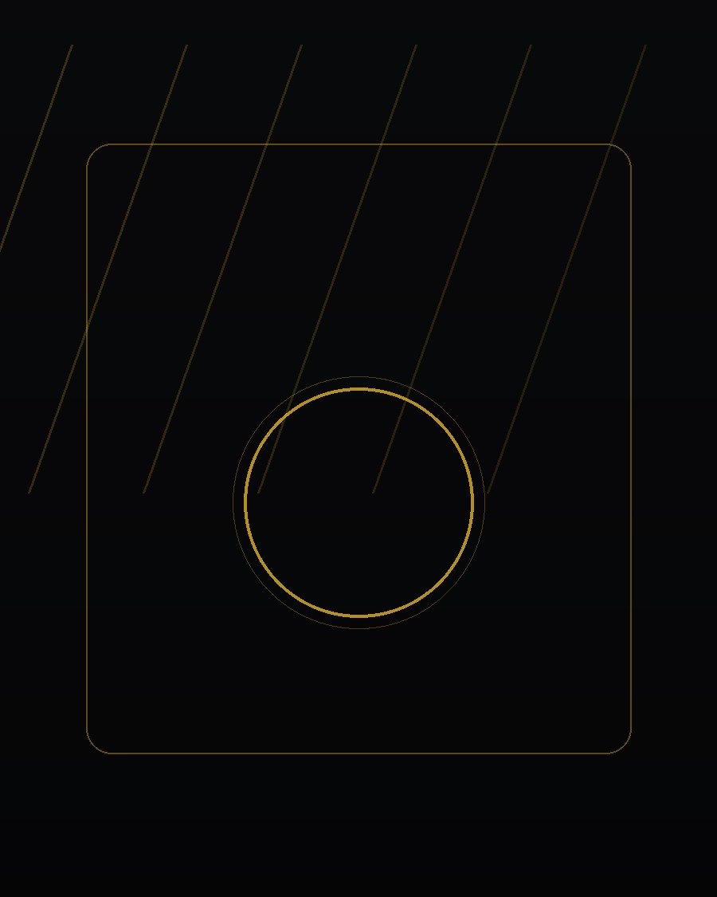

Nutrición
Alimentación con propósito
Nuestro enfoque nutricional acompaña tu entrenamiento con calculadoras, seguimiento diario y planes de ejemplo. No sustituye la consulta con un profesional de la salud.

Cómo te ayuda FitZone
- Calculadoras integradas — IMC, TMB, gasto energético y macronutrientes, siempre explicando sus límites.
- Seguimiento diario — registra tus comidas y compara contra tus objetivos de calorías y macros.
- Planes de ejemplo — modelos de comidas editables según tu objetivo (déficit, mantenimiento, superávit).
- Acompañamiento — en los planes Pro y Elite, tu entrenador revisa tu progreso nutricional contigo.
Importante
La información nutricional de FitZone es educativa y orientativa. No constituye asesoría médica ni nutricional profesional. Si tienes alguna condición de salud, consulta a un nutricionista o médico antes de iniciar un plan.
Empieza a registrar tu nutrición
Crea tu cuenta y usa las calculadoras y el seguimiento diario dentro de tu panel.